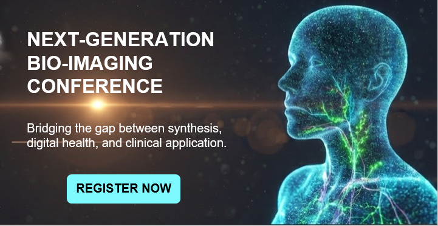

November 13, 2026
8:00 AM - 6:00 PM
8:00 AM - 6:00 PM
In Person at
Auditorium & Event/Exhibition Hall
Overview
The Next-Generation Bio-imaging Workshop will bring together researchers, clinicians, industry leaders, funding agency representatives, and patient advocates to explore emerging technologies, translational pathways, and future opportunities in biomedical imaging. Held at Rice University in Houston, the workshop leverages the unique ecosystem of the Texas Medical Center, Rice’s strengths in medical imaging, digital health, Synthesis and a growing regional bio-imaging industry to foster interdisciplinary collaboration and community building.
Through keynote lectures, thematic sessions, and panel discussions, the workshop will address advances in AI-enabled imaging, molecular imaging technologies, multimodal and multiscale systems, clinical translation, and commercialization. Notably, the workshop will feature focused discussions aligned with the ARPA-H LIGHT (Lymphatic Imaging for Guiding Therapy) program, bringing together investigators, clinicians, program leadership, and patient advocates to examine how advanced imaging technologies can improve the understanding, diagnosis, and management of lymphatic disease.
By convening academic pioneers, industry innovators, journal editors, federal program directors, and patient voices, this one-day workshop aims to catalyze new collaborations, align imaging research with real-world clinical and patient needs, and position Houston as a national hub for next-generation bio-imaging innovation.